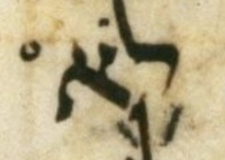
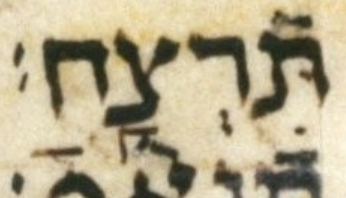
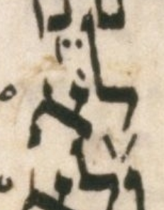

Two of the Supplied accents page's “Aside” paragraphs (Exodus 20:3, Deuteronomy 5:17) speculate that the Leningrad Codex's naqdan (pointing-scribe) may have intended a single vertical under-bar stroke to serve both the taḥton and elyon strands' readings at once, rather than the mark being genuinely absent for one strand.
The three photos below, from elsewhere in the very same two Decalogue passages, show the naqdan certainly could and did write two separate under-bar marks on one letter when two were meant: Exodus 20:13's לא and תרצח (that תרצח the direct twin of Deuteronomy 5:17's תרצח), and Deuteronomy 5:17's לא.
Whether that argues for or against the Asides' “one stroke, two purposes” speculation is for the reader to weigh -- this page's job is just to show the evidence, not to conclude for them.


